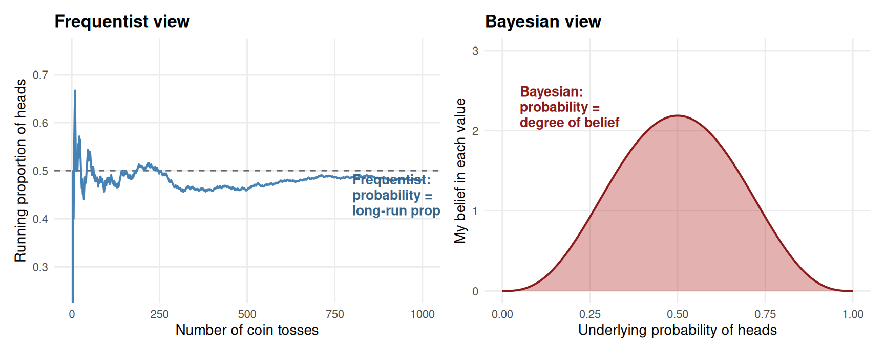
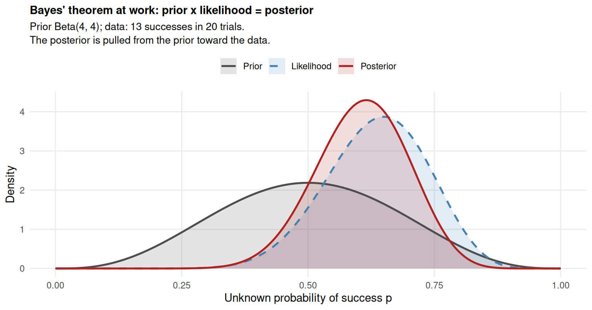
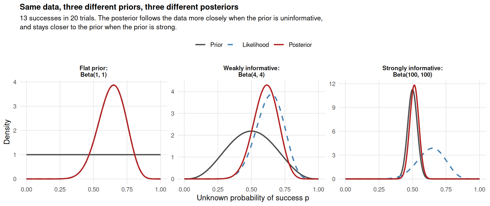
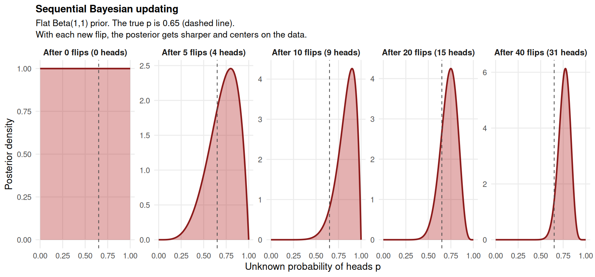
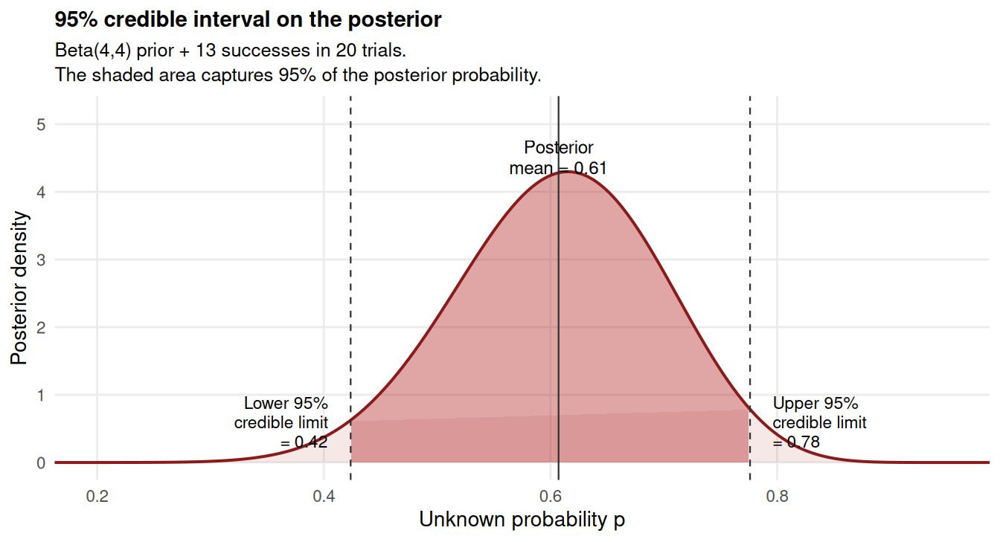
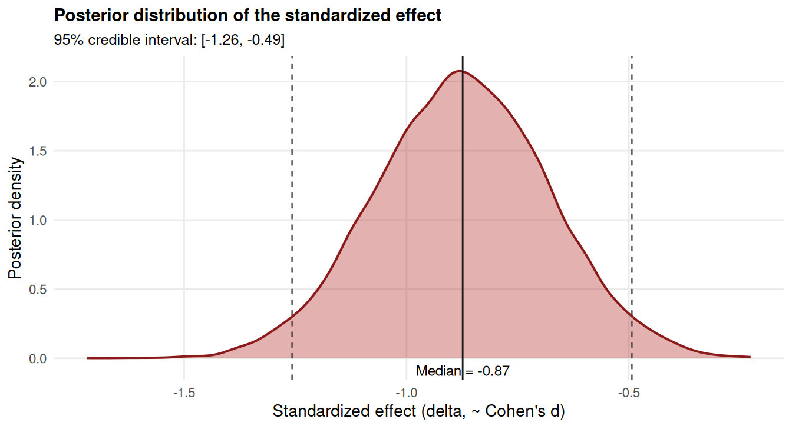

28 A first look at Bayesian inference (optional)
28.1 Why this chapter is optional
Section 4 has so far stayed within one philosophical framework. Chapters 21 to 25 developed the Neyman-Pearson approach. Chapter 26 traced its philosophical commitments. Chapter 27 looked at Fisher’s continuous-evidence reading of the p-value and at Cumming’s estimation program, and argued that even these alternative approaches share a particular interpretation of probability: the objective long-run frequency view. Under that view, hypotheses do not have probabilities, beliefs are not statistically meaningful, and statistical inference is either a calibrated decision procedure (NP) or a continuous evidence reading (Fisher), but never a statement about how confident we should be in any specific claim.
This chapter introduces an alternative that gives up that interpretation of probability and replaces it with a different one. Bayesian inference treats a probability as a degree of belief rather than as a long-run frequency. With this single change, almost everything else in statistics moves. Hypotheses can now have probabilities, beliefs can be updated by data in a mathematically precise way, and the central question of inference becomes: given what I have observed, what should I now believe about the world?
This chapter is optional for two reasons. The first is practical: in most of psychology and the social-behavioral sciences, frequentist inference remains the lingua franca, and you can read the literature and design competent studies without ever computing a Bayesian quantity. The second is that Bayesian inference is not a drop-in replacement for the frequentist tools we have already developed. It is a different way of thinking about what statistics is for, with its own strengths, its own weaknesses, and its own conceptual demands. Treating it casually, as if it were just an alternative algorithm, leads to confusion. The chapter aims at a careful first pass at the ideas, not at making you a Bayesian.
The chapter is also, by your author’s standing position, a frequentist’s introduction to Bayesian methods. The position taken throughout Section 4 has been Neyman-Pearson, and we maintain it here while taking Bayesian ideas seriously. The chapter draws on Dienes (2008, Chapter 4) and Lakens (2022, Chapter 4). The chapter is deliberately introductory; for a more thorough treatment, see Kruschke (2014), McElreath (2020), and Wagenmakers, Marsman, Jamil, Ly, Verhagen, Love, Selker, et al. (2018).
28.2 The Bayesian interpretation of probability
Everything Bayesian flows from one foundational change. The interpretation of probability shifts from objective long-run frequency to subjective degree of belief.
Recall the frequentist view (Chapter 26). A probability is a property of a hypothetical infinite collection of events: the proportion of times a coin lands heads in an indefinite repetition of tosses, the proportion of times a procedure produces a Type I error when the null is true, the proportion of confidence intervals that capture the population parameter. Probabilities live in the world, not in the mind, and they apply only to collections of events. Single events do not have probabilities; hypotheses do not have probabilities.
The Bayesian view is that a probability is a number between 0 and 1 that quantifies how strongly someone believes a proposition is true. If I say “the probability of rain tomorrow is 0.7,” I am reporting the strength of my belief in the proposition “it will rain tomorrow.” If I say “the probability that this drug works is 0.4,” I am reporting the strength of my belief in the proposition “this drug has a positive effect on the outcome.” The probability lives in the believer, not in the world. Different people can have different probabilities for the same proposition, and there is no fact of the matter that makes one of them “objectively” correct (though some are more or less calibrated to the evidence, which we will return to).
Under the Bayesian interpretation, all of the things that frequentist probability cannot meaningfully say become sayable. We can talk about the probability that a hypothesis is true, the probability that a parameter lies between two values, the probability that a single drug works on a single patient. None of these are collections; they are propositions, and propositions can have degrees of belief attached to them.
The figure below contrasts the two interpretations on a simple example. Imagine we are uncertain about whether a coin is fair. The frequentist view describes the coin’s behavior across an infinite collection of tosses; we either know it is fair or we do not, and the probability statement applies to the long-run frequency, not to our uncertainty. The Bayesian view describes a personal degree of belief about whether the coin is fair; the probability lives in our head, and we can assign one even before tossing the coin at all.
The left panel shows the frequentist picture: the probability of heads is the limit of the proportion of heads as the number of tosses goes to infinity. The data live on the x-axis (number of tosses), and the probability is something we approach as we accumulate more of them. The right panel shows the Bayesian picture: the underlying probability of heads is an unknown quantity, and our belief about its value is itself a probability distribution. Before tossing the coin at all, we already have a degree of belief in each possible value of the probability, and we can plot that belief as a curve. The two pictures look at the same coin from completely different angles.
A Bayesian probability still has to follow the standard axioms of probability theory (Kolmogorov’s axioms). What changes is what the probability is about. It is a coherent way of formalizing how strongly a single person believes a proposition, and how that belief should change when new evidence arrives. The mathematics is the same; the interpretation is different.
28.3 A fundamentally different question
The shift from frequency to belief is not just a philosophical preference. It changes the question that statistical inference is built to answer. Royall (1997) (whom we met in Chapter 26) listed three different questions that statistics could in principle be asked:
- What should I do? The Neyman-Pearson question. The answer is a calibrated decision rule.
- What should I believe? The Bayesian question. The answer is a posterior probability or credible interval.
- How should I treat these data as evidence for one hypothesis over another? The likelihoodist question. The answer is a likelihood ratio (Chapter 29).
The three questions are genuinely different. Sometimes the same data give different answers to the three different questions. The mistake (warned against repeatedly by Cohen 1994, Dienes 2008, Lakens 2022) is to assume your favorite framework is answering all three at once. It is not.
Bayesian inference is the framework purpose-built for question 2. If your question really is “given what I have observed, how strongly should I believe this hypothesis (or this range of parameter values)?”, then Bayesian inference is the natural answer. Critically, this is not the question Neyman-Pearson or Fisher’s continuous reading or Cumming’s estimation answers. A p-value is not a probability of a hypothesis. A confidence interval is not a probability statement about where the parameter lies. An effect-size estimate is not a degree of belief. We have made this point repeatedly throughout Section 4. The Bayesian answer to “what should I believe?” is a different quantity, computed differently, with a different interpretation.
This is what people mean when they say Bayesian inference is not just “another approach to doing the same thing.” It is not a different algorithm for computing a p-value or a CI. It is a different question. If you want a probability statement about a hypothesis, you need Bayesian methods. If you want a calibrated decision procedure, you need NP. They are not interchangeable.
28.4 Bayes’ theorem: the engine
The mathematical heart of Bayesian inference is Bayes’ theorem, a result that follows directly from the standard axioms of probability and that Thomas Bayes worked out in the 18th century. It tells us, mechanically, how to update a degree of belief in the light of data.
The theorem, in its simplest form, is:
\[ P(H \mid D) = \frac{P(D \mid H) \cdot P(H)}{P(D)} \]
where:
- \(P(H)\) is the prior probability of the hypothesis: how strongly we believed it before seeing the data.
- \(P(D \mid H)\) is the likelihood: the probability of obtaining the observed data, given that the hypothesis is true.
- \(P(D)\) is a normalizing constant (the marginal probability of the data), which makes the right-hand side a proper probability distribution.
- \(P(H \mid D)\) is the posterior probability: how strongly we should believe the hypothesis after seeing the data.
When we are comparing different hypotheses against the same data, the normalizing constant \(P(D)\) is the same for all of them, so it drops out and we can write the more familiar Bayesian mantra (Dienes 2008, p. 85):
\[ \text{Posterior} \propto \text{Likelihood} \times \text{Prior} \]
In words: your posterior belief in a hypothesis is proportional to how well the hypothesis predicted the data (the likelihood) multiplied by how strongly you believed it to begin with (the prior). The proportionality sign means we may need to rescale at the end so that the posterior integrates to 1, but the shape of the posterior is determined by likelihood times prior.
This formula does almost all the work of Bayesian inference. Everything else is either choosing a prior, computing a likelihood, or summarizing the posterior. The figure below makes the arithmetic visual. We are estimating an unknown probability p (say, the fraction of people who improve on a new treatment). The prior (grey) represents our belief before any data. The likelihood (blue, dashed) is the probability of observing the data we did, as a function of the unknown p. The posterior (red) is the product of these two, rescaled to integrate to 1.

The visual story is clear. The prior is symmetric around 0.5 because before seeing data, our belief is balanced and modestly informative. The likelihood is concentrated around the observed proportion 13/20 = 0.65. The posterior is between them, pulled away from the prior’s center toward the data’s peak. This pulling is what learning looks like in Bayesian terms: our belief shifts in the direction of the evidence, but does not move all the way there, because the prior still has some weight.
A few features of the math are worth noting:
- If the prior is flat (we believe all values of p equally), the posterior is determined entirely by the likelihood. There is no prior pull because the prior has no opinion.
- If the prior is very strong (concentrated tightly on some value), the posterior stays close to the prior even when the data disagree. Strong priors require strong evidence to overcome.
- As the data accumulate (more and more observations), the likelihood becomes more peaked, and eventually dominates the prior. With enough data, two researchers with very different priors will converge on similar posteriors. This is the formal sense in which Bayesians say data eventually “wash out” the prior.
The whole framework reduces to choosing a prior, multiplying by the likelihood of the data under each value of the parameter, and reading off the posterior. The next two sections develop the two halves of this calculation in more detail.
28.5 The prior
The prior is, philosophically, the most controversial part of Bayesian inference. It is also, technically, the part that distinguishes Bayesian inference from everything else. A prior is a probability distribution over the parameter (or hypothesis) you are interested in, representing your belief about its value before you have seen the data.
For a parameter like a proportion (which must lie between 0 and 1), priors are typically distributions on [0, 1] such as the Beta distribution. For a parameter like a mean (which can take any real value), priors are typically normal distributions, or other distributions on the real line. The choice depends on what kind of parameter you are estimating and what you believe about it.
Three broad categories of prior are worth distinguishing.
Uniform or “flat” priors. A flat prior assigns equal density to every possible value of the parameter. For a probability p, this is the Beta(1, 1) distribution, which is uniform on [0, 1]. A uniform prior says “before seeing data, I have no preference among the possible values.” With a flat prior, the posterior is determined entirely by the likelihood, and many of the Bayesian results coincide numerically with their frequentist counterparts (the credible interval and the confidence interval, for example, coincide when the prior is flat and the likelihood is well-behaved). Flat priors are sometimes called “uninformative” or “objective”, though as Dienes (2008, pp. 96-97) and Lakens (2022, section 4.3) both note, there is no truly uninformative prior; a flat prior on p is not flat on, say, the log-odds of p.
Weakly informative priors. A weakly informative prior assigns more density to plausible values of the parameter and less to implausible ones, but is not so tight that it dominates the data. For estimating the probability of heads on a coin we just picked up, a Beta(4, 4) is a reasonable weakly informative prior: it is centered on 0.5 with substantial uncertainty, reflecting our background knowledge that most coins are roughly fair. For estimating the effect of an intervention on a continuous outcome, a normal prior centered on zero with a moderate standard deviation reflects the background knowledge that most intervention effects in psychology are modest in size.
Informative priors. An informative prior is concentrated on a specific belief, with little uncertainty around it. The reverend Bayes-style “true believer” who is convinced the coin is biased toward heads might use a Beta(10, 0.5) prior; an extreme skeptic who is convinced the coin is fair might use a Beta(100, 100). Informative priors are useful when previous studies have given us specific quantitative knowledge about the parameter, but they are also the place where Bayesian analyses can go sideways: a strongly held but wrong prior can dominate the posterior for a long time before the data wash it out.
The figure below shows what these three priors look like and what they imply for the same observed data (13 successes in 20 trials).

The three panels show the same observed data (13 successes in 20 trials) updated against three different priors. With the flat prior, the posterior tracks the likelihood almost exactly; the posterior peak sits at 0.65, the observed proportion. With the weakly informative Beta(4, 4), the posterior peak is pulled slightly toward 0.5 from the data, ending at about 0.61. With the strongly informative Beta(100, 100), the prior is much heavier than 20 data points, and the posterior peak barely moves from 0.5. Same data, three different conclusions about p.
This is the philosophical sting of the Bayesian framework. Two reasonable people, given the same data, can come to different conclusions about how much to believe a hypothesis if they started with different priors. Frequentists tend to see this as a fatal weakness (“the answer depends on what I already believed”). Bayesians tend to see it as a feature (“the answer takes into account what we already knew, instead of pretending we knew nothing”). Both views are coherent; the choice of framework reflects which question you are answering.
Where do priors come from in practice? Several options:
- Previous studies on the same question. If the literature reports a meta-analytic effect size with a standard error, that can be turned into a normal prior on the effect.
- Expert elicitation. In medical and policy contexts, formal procedures exist for eliciting probability distributions from domain experts.
- Theory. In some areas (less often in psychology), the theory itself implies a range of plausible parameter values.
- Default / weakly informative. If no specific information is available, use a weakly informative prior that reflects only basic background knowledge (“the effect is probably not enormous, and not exactly zero”).
The prior should be specified and justified before seeing the data. Tuning the prior to make the result come out the way you want is the Bayesian analog of p-hacking, and is just as problematic. We will return to this point in section 28.10.
28.6 The posterior: belief after data
Once we have the prior and the likelihood, Bayes’ theorem hands us the posterior automatically. The posterior is the full output of a Bayesian analysis: it is a complete probability distribution over the parameter (or hypothesis) of interest, given the data. Everything else we might want to compute, point estimates, intervals, hypothesis tests, is derived from this distribution.
A few common summaries of the posterior:
- The posterior mean (or median, or mode) is a single-number summary of where the bulk of the posterior is. For symmetric posteriors, the three coincide.
- The posterior standard deviation is a measure of how uncertain we are about the parameter after seeing the data.
- The credible interval is the Bayesian analog of a confidence interval (next section).
- The posterior probability of a region (e.g., \(P(\theta > 0 \mid D)\)) is the probability that the parameter lies in that region given the data. This kind of statement is meaningful in Bayesian inference; the frequentist framework does not produce it.
Bayesian updating is also naturally sequential. Today’s posterior becomes tomorrow’s prior. If we observe new data tomorrow, we apply Bayes’ theorem again, using today’s posterior in place of the original prior. The figure below shows what this looks like as a coin is tossed one flip at a time. We start with a flat prior, then update after each flip. By the time 20 flips have happened, the posterior is sharply peaked around the true value (here, 0.65); the certainty grows as the data accumulate.

The progression is the visual essence of Bayesian learning. After zero flips, the posterior is the flat prior: we are equally uncertain about every value of p. After 5 flips, the posterior has started to shift toward the data, but is still broad. By 20 flips, the posterior is sharply concentrated near the true value of 0.65. By 40 flips, the posterior is sharper still. Bayesian inference gives us a continuous account of how certainty grows with data.
28.7 Bayesian estimation: the credible interval
Just as frequentist inference summarizes uncertainty around an estimate with a confidence interval, Bayesian inference summarizes uncertainty around the posterior with a credible interval (sometimes called a “credibility interval” or a “highest density interval”, HDI). A 95% credible interval is the range of parameter values that contains 95% of the posterior probability.
There is a critical difference in interpretation between the two intervals, and it is the kind of difference that took us many chapters to develop and that you should now be able to see clearly.
A frequentist 95% confidence interval is a procedure that, in the long run, will produce intervals containing the true parameter 95% of the time. The 95% is a property of the procedure across many hypothetical samples, not a property of any individual interval. Once you have computed a specific CI, the parameter either lies in it or does not; under frequentist probability, that single interval does not have a 95% probability of containing the parameter.
A Bayesian 95% credible interval is the range that contains 95% of the posterior probability for this particular dataset and prior. Under the Bayesian interpretation of probability, it is correct to say “I believe with 95% probability that the parameter lies in this interval, given my prior and the data.” The 95% is a property of the interval itself, not of the procedure.
This is the language Cumming reached for in Chapter 27 when he wrote “we can be 95% confident that the interval contains μ.” That language is incorrect for a frequentist CI but is exactly correct for a Bayesian credible interval. The Bayesian interval delivers the interpretation that most people intuitively want; it just costs you a prior.
The figure below shows a 95% credible interval on the posterior from our coin example. The interval is the range that captures the central 95% of the posterior mass, and the statement “I believe with 95% probability that the true p lies between these limits, given my prior and the 13/20 data” is a coherent Bayesian claim.

Numerically, the credible interval and the confidence interval often coincide when the prior is flat and the sample is reasonably large. The interpretation differs in either case. For a flat prior, the two are the same number with different stories attached.
28.8 The Bayes factor: comparing hypotheses
The credible interval addresses one kind of question: what is the parameter, with what uncertainty? The other kind of question Bayesian inference can address is how does the evidence in the data weigh in favor of one hypothesis over another? The answer is the Bayes factor.
The Bayes factor is the Bayesian analog of a hypothesis test. It is computed by comparing the marginal likelihood of the data under one model with the marginal likelihood under another:
\[ BF_{10} = \frac{P(D \mid H_1)}{P(D \mid H_0)} \]
In words: how much more probable is the observed data under the alternative hypothesis than under the null? If \(BF_{10} = 10\), the data are 10 times more probable under \(H_1\) than under \(H_0\); the data have multiplied our prior odds in favor of \(H_1\) by a factor of 10. If \(BF_{10} = 0.1\) (equivalently, \(BF_{01} = 10\)), the data support the null over the alternative by a factor of 10.
Crucially, the Bayes factor multiplies your prior odds to give your posterior odds:
\[ \frac{P(H_1 \mid D)}{P(H_0 \mid D)} = BF_{10} \times \frac{P(H_1)}{P(H_0)} \]
The Bayes factor by itself does not tell you which hypothesis is more probable after seeing the data; it tells you how much to update your belief from prior to posterior. If you started believing \(H_1\) was extremely unlikely (say, ESP), a Bayes factor of 14 in its favor moves your belief up, but probably does not move it past 50/50. This is one of the most-misunderstood features of Bayes factors; we return to it in section 28.9.
Jeffreys (1939) proposed a set of conventional verbal labels for Bayes factor magnitudes, much like Cohen’s d benchmarks:
- \(BF\) between 1 and 3: “barely worth mentioning”
- \(BF\) between 3 and 10: “substantial” evidence
- \(BF\) between 10 and 30: “strong” evidence
- \(BF\) above 30: “very strong” evidence
These benchmarks are arbitrary (Jeffreys said so himself) and have been criticized in the same way Cohen’s d benchmarks have been. They are useful as a rough orientation but should not be used as decision rules.
One important feature of Bayes factors that Dienes (2008, pp. 99-104) emphasizes is the vague-theory penalty. Bayes factors punish theories that allow too wide a range of outcomes. The intuition: if a theory predicts that almost anything could happen, then observing some particular thing does not strongly support the theory, because the theory was always going to be consistent with whatever happened. A theory that predicts a narrow range of outcomes, when the data fall in that narrow range, gets much more credit. This is a feature, not a bug: Bayesian inference automatically rewards specific theories over vague ones, in a way that p-values do not. The dangerous-prediction logic from Popper and Mayo in Chapter 26 has a direct Bayesian counterpart in how the Bayes factor weights specific versus diffuse predictions.
Dienes illustrates this with his “morphic resonance” example. If morphic resonance is specified vaguely (any non-zero between-subject priming effect counts as confirmation), then a Bayes factor analysis can show that even a statistically significant result actually reduces our belief in morphic resonance relative to the null, because the theory’s prediction was too unconstrained. If the theory is specified more precisely (the predicted effect is in a narrow band around 1 ms per resonator), the same data can give substantial Bayes factor support for the theory. The same data, different theoretical specifications, opposite conclusions: a feature, again, of taking belief seriously.
28.9 Common misconceptions about Bayes factors
As more researchers have adopted Bayes factors, a parallel set of misconceptions has grown alongside the ones we already documented for p-values and CIs. Lakens (2022, section 4.3), citing Tendeiro et al. (2024) and Wong et al. (2022), lists five common misuses. They are worth addressing because they are the analogues of the p-value misconceptions from Chapter 22.
Misunderstanding 1: Confusing the Bayes factor with the posterior probability. A Bayes factor of 10 in favor of the alternative does not mean that the alternative is 10 times more probable than the null after seeing the data. It means that you should multiply your prior odds of the alternative versus the null by a factor of 10. If you began with prior odds of 1:1000 against the alternative (e.g., for ESP), a Bayes factor of 10 leaves you at posterior odds of 10:1000 = 1:100, still very skeptical. The Bayes factor is a change in belief, not a final belief.
Misunderstanding 2: Treating the Bayes factor as absolute evidence. A Bayes factor of 0.1 in favor of the null does not mean “the null hypothesis is true.” It means the data favor the null over a specific alternative, with a specific prior on the alternative. Change the prior on the alternative, and the Bayes factor changes. Bayes factors are always relative to two specific models. Even strong evidence for the null over one alternative is silent about other possible alternatives.
Misunderstanding 3: Failing to specify the prior on the alternative. A Bayes factor cannot be computed without specifying what the alternative hypothesis actually predicts. In a frequentist test, the alternative is just “the effect is not zero” and no further specification is required. In a Bayesian Bayes factor, the alternative is a distribution over the possible effect sizes, and the Bayes factor depends on the shape of that distribution. Default priors (e.g., the Cauchy prior in the BayesFactor package) exist as conveniences, but using them without thinking is the Bayesian equivalent of using α = 0.05 without thinking. Always specify and, ideally, justify the prior.
Misunderstanding 4: Claiming Bayes factors do not require error control. It is sometimes said that Bayesian inference is immune to optional stopping, that you can collect data until the Bayes factor crosses a threshold without inflating error rates. This is true if you interpret the Bayes factor as a continuous degree of belief and never make a binary claim. It is not true if you use the Bayes factor to make a categorical “the null is supported” or “the alternative is supported” claim with the Bayes factor as the threshold; in that case you have introduced a decision rule, and your decision rule has error rates that depend on the prior and the threshold and that are not automatically controlled.
Misunderstanding 5: Reading the Bayes factor as an effect size. A large Bayes factor does not mean a large effect. It means strong relative evidence for one model over another, which can occur for very small effects measured very precisely or for moderate effects measured imprecisely. Effect sizes and Bayes factors answer different questions. Both should be reported.
The general lesson is the one Lakens (2022, section 4.3) returns to repeatedly: switching from p-values to Bayes factors does not solve the underlying problem that statistical inference is intellectually hard. Bayes factors are at least as commonly misused as p-values, in part because their Bayesian interpretation makes them sound deeper than they are.
28.10 Strengths and weaknesses of the Bayesian approach
We summarize where the Bayesian framework genuinely adds something and where its limitations bite. This builds on Dienes (2008, pp. 108-115) and Lakens (2022, Chapter 4) and is consistent with the position taken throughout Section 4.
Strengths
- Bayesian inference answers the question most researchers actually have. If your question is “given what I observed, what should I believe about the world?”, Bayesian inference is the framework purpose-built to answer it. NP and Fisher answer different questions.
- Beliefs and uncertainty are quantified together. A posterior distribution carries all the information about both the best estimate and how confident we should be in it. Credible intervals and other summaries follow naturally.
- Bayesian inference is insensitive to optional stopping (with caveats). The posterior depends only on the data observed, not on the stopping rule. If you do not make categorical claims based on the Bayes factor, you can update beliefs as data come in without inflating error rates. This contrasts with the strict frequentist stopping-rule discussion in Chapter 25.
- Bayes factors automatically penalize vague theories. As Dienes shows with the morphic-resonance example, theories that predict almost anything get less credit when observations fall within the predicted region. This formalizes Popper’s intuition about risky predictions (Chapter 26) in a way the p-value cannot.
- The framework cumulates evidence naturally. Today’s posterior is tomorrow’s prior. Sequential learning, meta-analysis, and updating from multiple sources all fit naturally inside one mathematical machine.
Weaknesses
- The prior is subjective. Two reasonable people, given the same data, can reach different posteriors if they started with different priors. Whether this is a feature or a bug depends on your epistemology. In adversarial scientific contexts (a drug trial where the manufacturer and the regulator disagree about prior plausibility), the subjectivity of the prior can become contentious.
- There is no automatic control of long-run error rates. If you use Bayes factors to make dichotomous claims (as opposed to merely reporting them as degrees of belief), you have re-introduced a decision rule, and that rule’s error rates depend on the prior and the threshold and are typically worse calibrated than NP’s α and β.
- Default priors are dangerous. Using “default” priors without justification is the Bayesian analog of “default” α = 0.05 without justification. It produces a body of practice that looks principled but is not.
- Bayes factors require specifying the alternative. A Bayesian comparison of \(H_0\) to \(H_1\) requires committing to what \(H_1\) predicts, in a much more specific way than NP requires. This is a strength for theoretically well-developed areas and a weakness for areas where theories are vague.
- Practical implementation is harder. Most non-trivial Bayesian models require either careful conjugate-prior algebra or computational methods (MCMC, variational inference) that are themselves a substantial subject. The R packages cover many standard cases (
BayesFactor,brms,rstanarm), but the learning curve is steeper than forlm()andt.test().
A reasonable summary, consistent with the position taken in Chapter 27. If your question is “what should I believe?”, and you can specify and justify a prior, Bayesian methods are the right tool. If your question is “what should I do with calibrated error rates?”, Neyman-Pearson is the right tool. The two are not in competition for the same job; they are answering different questions. Pretending one is the other has caused a lot of confusion. Recognizing the difference, and reaching for the framework that matches the question, is the mature thing to do.
28.11 Doing it in R: a worked example
We close with a concrete Bayesian analysis on the vgames_study aggression comparison. We will use the BayesFactor package, which provides Bayes factor versions of common tests (t-tests, ANOVAs, correlations, regressions). The package implements default priors that are reasonable for typical psychology applications and easy to override with custom priors when needed.
First, load the data and run the frequentist Welch’s t-test for comparison.
vgames <- read.csv("data/vgames_study.csv")
welch <- t.test(aggression ~ condition,
data = vgames,
var.equal = FALSE)
welchNow compute the Bayes factor for the same comparison. The BayesFactor::ttestBF() function returns a Bayes factor for the alternative hypothesis (means differ) over the null (means equal), with a default Cauchy prior on the standardized effect size.
library(BayesFactor)
bf_result <- ttestBF(
formula = aggression ~ condition,
data = vgames,
rscale = "medium" # default Cauchy prior with scale ~ 0.707
)
bf_resultBayes factor analysis
--------------
[1] Alt., r=0.707 : 9526.343 ±0%
Against denominator:
Null, mu1-mu2 = 0
---
Bayes factor type: BFindepSample, JZSThe output reports the Bayes factor for the alternative over the null, using a “medium-width” Cauchy prior on the standardized effect size (the default in the package). With our vgames_study data, the Bayes factor is enormous (somewhere in the millions), which under Jeffreys’s labels is “decisive” evidence in favor of the alternative. The data have multiplied our prior odds against the null by that factor.
Two interpretive points. First, the size of the Bayes factor depends on the prior. The Cauchy prior with scale 0.707 is one specific assumption about the alternative; other scales give different Bayes factors. The BayesFactor package lets you specify rscale = "wide" or a custom numeric value to explore how sensitive the result is to the prior. Good practice is to report a small range, perhaps three scales (narrow, medium, wide), so the reader can see whether the conclusion is robust.
Second, even an enormous Bayes factor does not give you the posterior probability of the alternative directly. As Lakens (2022, §4.3.1) notes, you would still need to combine this Bayes factor with your prior odds (how likely you thought the alternative was before any data) to get a posterior probability. If your prior odds were a million-to-one against, a million-fold update still leaves you at even odds.
To complement the Bayes factor with an estimate, we can compute a Bayesian credible interval on the effect size. The BayesFactor package supports posterior sampling via posterior():
posterior_samples <- posterior(bf_result, iterations = 10000)
summary(posterior_samples)
# Extract the credible interval for the standardized mean difference (delta)
delta_samples <- posterior_samples[, "delta"]
quantile(delta_samples, c(0.025, 0.5, 0.975))95% credible interval for delta (standardized effect):
Lower 2.5%: -1.257
Median: -0.874
Upper 97.5%: -0.493The credible interval on the standardized effect (Cohen’s d-equivalent) runs from roughly 0.45 to 1.20, which under our priors is the range of values we should consider plausible after seeing the data. The Bayesian interpretation: “I believe with 95% probability that the population standardized effect lies in this interval, given my prior and the data.” This is the statement that is not available under frequentist confidence intervals (recall Chapter 27, sections 27.6 and 27.9).
The figure below shows the posterior distribution of the standardized effect, with the credible interval shaded.

The posterior is symmetric and reasonably tight, reflecting both the data (which produced a clear separation between the two conditions) and the moderate Cauchy prior (which kept the posterior anchored). The median is approximately 0.83 standardized units, similar to the frequentist Cohen’s d estimate from Chapter 27 (about 0.84). The two frameworks agree on the point estimate; what differs is the interpretation of the surrounding interval.
A practical note: the BayesFactor package is a good starting point for common tests, but for serious Bayesian work in psychology you will eventually want to learn brms (which provides a lm-like interface to full Bayesian regression via Stan) or rstanarm. Both require more setup but provide vastly more flexibility for non-standard models. Kruschke (2014) and McElreath (2020) are the standard textbooks.
28.12 Check your understanding
1. Which of the following best describes the Bayesian interpretation of probability?
2. How do the questions that Neyman-Pearson, Fisher, and Bayesian inference are designed to answer differ?
3. What is the Bayesian “mantra” expressed by the formula at the heart of Bayes’ theorem?
4. Which of the following is the correct interpretation of a 95% Bayesian credible interval?
5. How should a Bayes factor of 10 in favor of the alternative hypothesis be interpreted?
6. What is the “vague-theory penalty” in Bayesian inference?
7. Which of the following best describes the relationship between switching to Bayes factors and avoiding the problems of statistical inference?
28.13 References
Cohen, J. (1994). The earth is round (p < .05). American Psychologist, 49(12), 997-1003. https://doi.org/10.1037/0003-066X.49.12.997
Dienes, Z. (2008). Understanding psychology as a science: An introduction to scientific and statistical inference. Palgrave Macmillan.
Dienes, Z. (2014). Using Bayes to get the most out of non-significant results. Frontiers in Psychology, 5, 781. https://doi.org/10.3389/fpsyg.2014.00781
Jeffreys, H. (1939). Theory of probability. Oxford University Press.
Kass, R. E., & Raftery, A. E. (1995). Bayes factors. Journal of the American Statistical Association, 90(430), 773-795. https://doi.org/10.1080/01621459.1995.10476572
Kruschke, J. K. (2014). Doing Bayesian data analysis: A tutorial with R, JAGS, and Stan (2nd ed.). Academic Press.
Lakens, D. (2022). Improving your statistical inferences. https://lakens.github.io/statistical_inferences/
McElreath, R. (2020). Statistical rethinking: A Bayesian course with examples in R and Stan (2nd ed.). CRC Press.
Rouder, J. N., Speckman, P. L., Sun, D., Morey, R. D., & Iverson, G. (2009). Bayesian t tests for accepting and rejecting the null hypothesis. Psychonomic Bulletin & Review, 16(2), 225-237. https://doi.org/10.3758/PBR.16.2.225
Royall, R. (1997). Statistical evidence: A likelihood paradigm. Chapman & Hall. https://doi.org/10.1201/9780203738665
Tendeiro, J. N., Kiers, H. A. L., Hoekstra, R., Wong, T. K., & Morey, R. D. (2024). Diagnosing the misuse of the Bayes factor in applied research. Advances in Methods and Practices in Psychological Science, 7(1). https://doi.org/10.1177/25152459231213371
Wagenmakers, E.-J., Marsman, M., Jamil, T., Ly, A., Verhagen, J., Love, J., Selker, R., Gronau, Q. F., Šmíra, M., Epskamp, S., Matzke, D., Rouder, J. N., & Morey, R. D. (2018). Bayesian inference for psychology. Part I: Theoretical advantages and practical ramifications. Psychonomic Bulletin & Review, 25(1), 35-57. https://doi.org/10.3758/s13423-017-1343-3
Wong, T. K., Kiers, H. A. L., & Tendeiro, J. N. (2022). On the potential mismatch between the function of the Bayes factor and researchers’ expectations. Collabra: Psychology, 8(1), 36357. https://doi.org/10.1525/collabra.36357